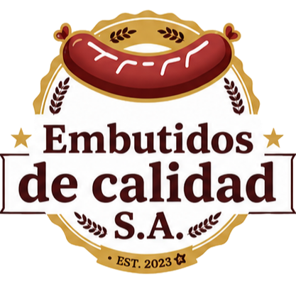

Antigüedad de saldos
Indique fecha de corte y filtros. Revise la vista previa antes de imprimir o exportar.
Recomendación
Verifique los datos y los importes antes de confirmar. Si aparece un error, corrija los campos señalados y vuelva a intentarlo.

Ventas y Cuentas por CobrarIndique fecha de corte y filtros. Revise la vista previa antes de imprimir o exportar.
Verifique los datos y los importes antes de confirmar. Si aparece un error, corrija los campos señalados y vuelva a intentarlo.